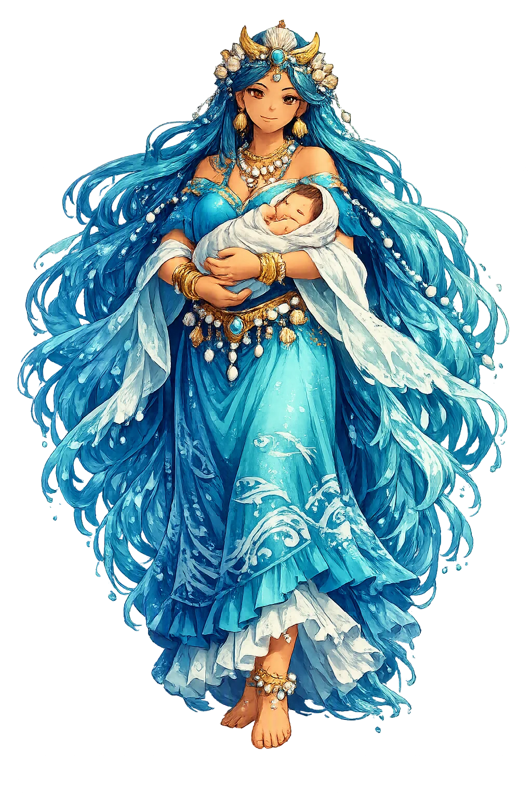
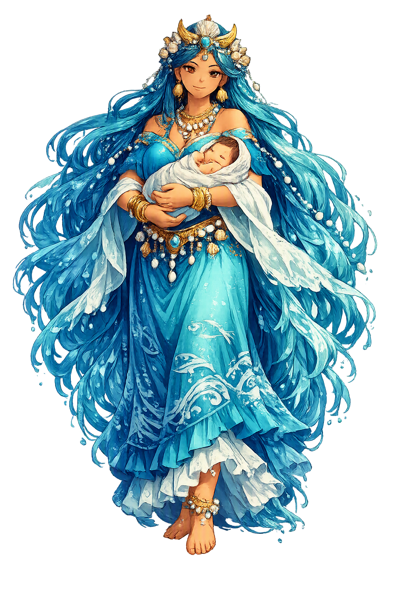

Stories of Mamaqucha
The record of Mamaqucha is honest about its thinness: Andean peoples venerated the sea, but the highland Inca met the ocean late, and no great epic of hers survives. What we have is attested in colonial chronicles — and where those chronicles disagree or romanticize, this temple says so.
Along the desert coast, where river valleys reach the Pacific, Andean peoples venerated the sea as a mother. Bernabé Cobo, writing in the seventeenth century from earlier sources, describes how the seashore itself was sacred: offerings were made where the surf breaks, because the sea was the mother of fishes, the source of the coast's food. The name says the theology plainly — mama, mother, plus qucha, lake or sea, a word that names every highland lake, so the ocean was conceived as the greatest of lakes, the mother of waters. This was no abstract personification: fishermen lived from her bounty and addressed her with the kinship term before casting their nets. Later devotion gave the idiom to the Virgin — Mamacha Candelaria of Puno — but the grammar of it, mother by the water, is far older than the church.
The Huarochirí Manuscript, recorded from Quechua speakers around 1608, tells of the coastal maker Pacha Kamaq, 'Creator of the World', whose great shrine stood in the Lurín valley above the sea. In the flood that ended an earlier humanity, the creator punished the unworthy and then made the fish — populating the ocean as a pasture. Cieza de León, touring the coast in 1547, marveled at Pachacamac's oracle, consulted by pilgrims from across the Andes, and at its temple commanding the waters below. The sea of Mamaqucha and the shrine of Pachacamac belong to one geography: the maker above the valley, the mother-water below. The myth encodes a coastal theology older than the Inca state, in which creation and ocean are a matched pair, and the narrow desert coast mediates between them.
The chronicles preserve a striking imperial legend: Topa Inca Yupanqui, having conquered the coast, resolved to cross the mother sea itself. Sarmiento de Gamboa reports that he had great balsa rafts built, manned them with chosen sailors, and sailed west for months, reaching islands named Nina and Achachumbi, from which he returned with plunder, captives, and a throne of copper with a chair of brass — and, in some tellings, dark-skinned people. Murúa and Cobo repeat the story. Modern historians treat the trans-Pacific voyage with justified skepticism — the described objects resemble Andean metalwork more than Polynesian goods — but the tradition matters regardless: it imagines the sea as an imperial frontier that could be claimed, not merely worshipped. Mamaqucha was the one realm where Inca ambition met a power larger than itself, and the chroniclers could not decide whether the encounter was history or parable.
The Inca organized their sacred geography as a ritual circuit — the ceque system of Cuzco — in which mountains, springs, and stones were assigned as huacas to kin groups. The ocean stood outside this architecture. Brian Bauer's studies of the sacred landscape show a state cult oriented to peaks and water sources; the Pacific appears as boundary, not as a ranked shrine. Scholars read this as honest geography: the vertical world of the Andes — peaks, terraces, springs — was the cosmos the Inca could map, and the horizontal sea was what lay beyond the map. Sixteenth-century Quechua lexicons already record qucha as both 'lake' and 'sea', the double meaning the name depends on (Santo Tomás, Vocabulario, 1560). Mamaqucha thus holds a singular position in this catalog: a mother acknowledged, honored at the shore, and never domesticated — an asymmetry this temple keeps as its central fact.
Mother Sea
Mamaqucha — Quechua mama, 'mother', and qucha, 'lake, sea' — is the Andean sea as mother: mother of fishes, horizon of the Inca world, the one great power their mountain religion never fully mastered. Coastal peoples made offerings where desert meets surf; the Inca themselves met her only late, and named her with the kinship word they gave the earth.
The sea as progenitor of marine life — fish are her children, and the coast's peoples addressed her as 'mother' when casting nets (Cobo, Historia 13).
The Pacific as the western horizon of Tahuantinsuyu: venerated from the shore, crossed only late, and never absorbed into the mountain cults.
Seaside huacas received offerings along the desert littoral; the great oracle of Pachacamac faced the ocean its maker had filled with fish (Cieza de León, Crónica ch. 5).
Apus ruled peaks and springs within the ceque system; Mamaqucha stood outside it — the empire's one unincorporated power (Bauer, Sacred Landscape).
From the original script to the living URL
Mamaqucha
The name survives in scholarly transliteration. Mamaqucha is the standard Incan romanisation, documented in academic sources — “Mother sea”. Because the spelling uses only Latin letters, the form is the same in both ASCII and Unicode.
No indigenous writing system is securely attested for individual incan names. The form shown is a modern scholarly transliteration.
mamaqucha
The plain mamaqucha form is identical to the Unicode restoration. Because this name is already written in Latin letters, no diacritics, stress, or script information were lost — only capitalization differs.
Mamaqucha
The Unicode restoration does not need to recover lost marks for Mamaqucha. Its value is canonical spelling and consistent cataloguing, not the reconstruction of erased orthography. The domain is readable as-is to both DNS and humanity.
Mamaqucha.com
This restoration is written entirely in ASCII letters — no Punycode encoding stands between Mamaqucha and the DNS. The domain reads identically to machines and to human eyes.
Owned, ideal, and ASCII forms of Mamaqucha
Mamaqucha
The full Unicode restoration. mamaqucha.com is not in the PuniCodex collection — it is watched for release; if it drops, this temple upgrades to an owned flagship.
How Mamaqucha was spoken
How Mamaqucha is preserved in writing
No indigenous writing system is securely attested for individual incan names. The form shown is a modern scholarly transliteration.
Contribute scholarly provenance →The Andes are a vertical civilization: it reads the world up and down — terraces, peaks, apus above, dead below. Mamaqucha is the great exception, the horizontal. Where every apu is a named, ranked, assigned lord, the sea is simply Mother — an address, not an inventory entry. That asymmetry is the whole theology. The state could measure a mountain into its ritual circuit; it could not measure an ocean, and so it left the ocean in the one grammatical case it could not administer: the vocative. To call the sea 'mother' is to admit that some powers are fed by being spoken to, not by being organized. This temple keeps that admission. Mamaqucha is the entry in the lexicon that refused to become a monument, and is honored precisely for the refusal.
Enter Extended Lore